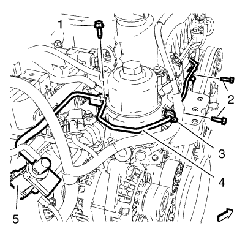
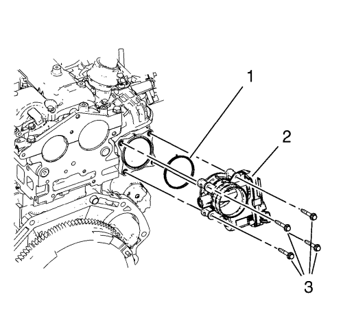
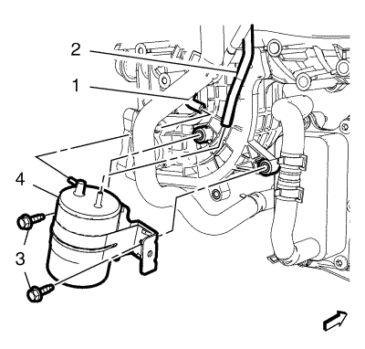
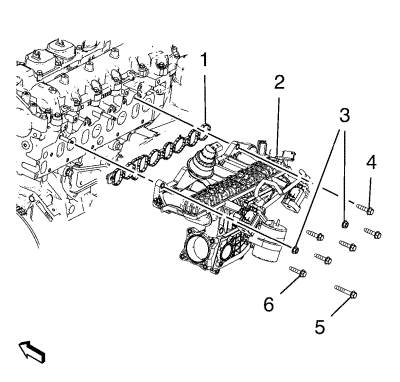

Orlando
Sustitución del colector de admisión
Procedimiento de desmontaje
Retire el refrigerador de la válvula de recirculación de gases de escape. Consultar
Sustitución del refrigerador de la válvula de recirculación de gases de escape
.
Retire las 2 válvulas solenoides de control de vacío de la válvula de ajuste del aire de admisión. Consultar
Sustitución de la válvula solenoide de control de vacío de la válvula de ajuste del aire de admisión
.

Retire el tornillo del soporte del tubo flexible de depresión de control del aire de carga (1) del colector de admisión.
Retire los 2 tornillos del soporte del tubo flexible de depresión de control del aire de carga (2) de la cubierta delantera del motor.

Retire los 4 tornillos del conjunto del cuerpo de la mariposa (3).
Retire el conjunto del cuerpo de la mariposa (2) con la junta (1).
Desmonte el motor de arranque. Consultar
Sustitución del motor de arranque
:
2.0L Diésel LNP con MT
→
2.0L Diésel LNP con AT
→
1.6L LDE, LXV, 1.8L 2H0 y LUW
.

Retire el tubo flexible de la válvula reguladora de vacío (1) del depósito de vacío de la válvula de derivación del aire de carga (4).
Retire el tubo flexible de la bomba de vacío (2) del depósito de vacío de la válvula de derivación del aire de carga (4).
Retire los 2 tornillos del soporte del depósito de vacío de la válvula de derivación del aire de carga (3).

Retire el perno (5) del soporte del colector de admisión.
Retire los 4 tornillos del colector de admisión inferior (6).
Bajar el vehículo.
Retire las 2 tuercas (3) del colector de admisión.
Retire los 2 tornillos del colector de admisión superior (4).
Desmonte el colector de admisión (2).
Desmonte la junta (1) del colector de admisión.
Procedimiento de montaje
Monte el colector de admisión (2) y una junta NUEVA del colector de admisión (1).
Precaución:
Consulte
Precaución con las fijaciones
en la sección Prólogo.
Monte los 2 tornillos del colector de admisión superior (4) y las 2 tuercas del colector de admisión (3), y apriételos a
25 N·m (18 lib. pie)
.
Elevar el vehículo
Monte los 4 tornillos del colector de admisión inferior (6) y apriételos a
25 N·m (18 lib. pie)
.
Monte el tornillo del soporte del colector de admisión (5) y apriételo a
25 N·m (18 lib. pie)
.
Monte los 2 tornillos del soporte del depósito de vacío de la válvula de derivación del aire de carga (3) y apriételos a
10 N·m (89 lib. pulg.)
.
Monte el tubo flexible de la bomba de vacío (2) en el depósito de vacío de la válvula de derivación del aire de carga (4).
Monte el tubo flexible de la válvula reguladora de vacío (1) en el depósito de vacío de la válvula de derivación del aire de carga (4).
Instale el motor de arranque. Consultar
Sustitución del motor de arranque
:
2.0L Diésel LNP con MT
→
2.0L Diésel LNP con AT
→
1.6L LDE, LXV, 1.8L 2H0 y LUW
.
Bajar el vehículo.
Monte el conjunto del cuerpo de la mariposa (2) con una junta NUEVA (1).
Monte 4 tornillos del conjunto del cuerpo de la mariposa (3) y apriételos a
10 N·m (89 lib. pulg.)
.
Monte los 3 tornillos del tubo flexible de vacío de control del aire de carga (1, 2) y apriételos a
9 N·m (80 lib. pie)
.
Monte las 2 válvulas solenoide de control de vacío de la válvula de ajuste del aire de admisión. Consultar
Sustitución de la válvula solenoide de control de vacío de la válvula de ajuste del aire de admisión
.
Monte el enfriador de la válvula de recirculación de gases de escape. Consultar
Sustitución del refrigerador de la válvula de recirculación de gases de escape
.
© Copyright Chevrolet. All rights reserved